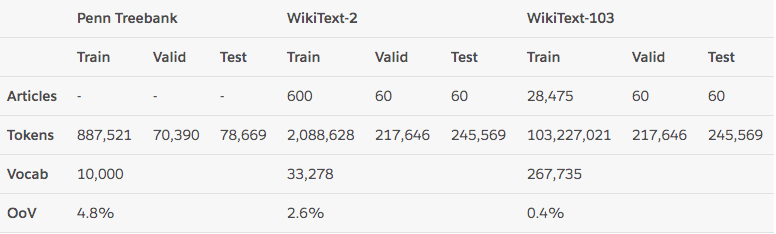
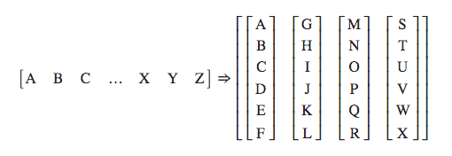

Transformer构建语言模型
3.1 使用Transformer构建语言模型¶
学习目标¶
- 了解有关语言模型的知识.
- 掌握使用Transformer构建语言模型的实现过程.
- 什么是语言模型:
- 以一个符合语言规律的序列为输入，模型将利用序列间关系等特征，输出一个在所有词汇上的概率分布.这样的模型称为语言模型.
# 语言模型的训练语料一般来自于文章，对应的源文本和目标文本形如:
src1 = "I can do" tgt1 = "can do it"
src2 = "can do it", tgt2 = "do it <eos>"
-
语言模型能解决哪些问题:
- 1, 根据语言模型的定义，可以在它的基础上完成机器翻译，文本生成等任务，因为我们通过最后输出的概率分布来预测下一个词汇是什么.
-
2, 语言模型可以判断输入的序列是否为一句完整的话，因为我们可以根据输出的概率分布查看最大概率是否落在句子结束符上，来判断完整性.
-
3, 语言模型本身的训练目标是预测下一个词，因为它的特征提取部分会抽象很多语言序列之间的关系，这些关系可能同样对其他语言类任务有效果.因此可以作为预训练模型进行迁移学习.
整个案例的实现可分为以下五个步骤¶
- 第一步: 导入必备的工具包
- 第二步: 导入wikiText-2数据集并作基本处理
- 第三步: 构建用于模型输入的批次化数据
- 第四步: 构建训练和评估函数
- 第五步: 进行训练和评估(包括验证以及测试)
第一步: 导入必备的工具包¶
- pytorch版本必须使用1.3.1, python版本使用3.6.x
pip install torch==1.3.1
# 数学计算工具包math
import math
# torch以及torch.nn, torch.nn.functional
import torch
import torch.nn as nn
import torch.nn.functional as F
# torch中经典文本数据集有关的工具包
# 具体详情参考下方torchtext介绍
import torchtext
# torchtext中的数据处理工具, get_tokenizer用于英文分词
from torchtext.data.utils import get_tokenizer
# 已经构建完成的TransformerModel
from pyitcast.transformer import TransformerModel
- torchtext介绍:
- 它是torch工具中处理NLP问题的常用数据处理包.
- torchtext的重要功能:
- 对文本数据进行处理, 比如文本语料加载, 文本迭代器构建等.
- 包含很多经典文本语料的预加载方法. 其中包括的语料有：用于情感分析的SST和IMDB, 用于问题分类的TREC, 用于及其翻译的 WMT14， IWSLT，以及用于语言模型任务wikiText-2, WikiText103, PennTreebank.
- 我们这里使用wikiText-2来训练语言模型, 下面有关该数据集的相关详情:

- wikiText-2数据集的体量中等, 训练集共有600篇短文, 共208万左右的词汇, 33278个不重复词汇, OoV（有多少正常英文词汇不在该数据集中的占比）为2.6%，数据集中的短文都是维基百科中对一些概念的介绍和描述.
第二步: 导入wikiText-2数据集并作基本处理¶
# 创建语料域, 语料域是存放语料的数据结构,
# 它的四个参数代表给存放语料（或称作文本）施加的作用.
# 分别为 tokenize,使用get_tokenizer("basic_english")获得一个分割器对象,
# 分割方式按照文本为基础英文进行分割.
# init_token为给文本施加的起始符 <sos>给文本施加的终止符<eos>,
# 最后一个lower为True, 存放的文本字母全部小写.
TEXT = torchtext.data.Field(tokenize=get_tokenizer("basic_english"),
init_token='<sos>',
eos_token='<eos>',
lower=True)
# 最终获得一个Field对象.
# <torchtext.data.field.Field object at 0x7fc42a02e7f0>
# 然后使用torchtext的数据集方法导入WikiText2数据,
# 并切分为对应训练文本, 验证文本，测试文本, 并对这些文本施加刚刚创建的语料域.
train_txt, val_txt, test_txt = torchtext.datasets.WikiText2.splits(TEXT)
# 我们可以通过examples[0].text取出文本对象进行查看.
# >>> test_txt.examples[0].text[:10]
# ['<eos>', '=', 'robert', '<unk>', '=', '<eos>', '<eos>', 'robert', '<unk>', 'is']
# 将训练集文本数据构建一个vocab对象,
# 这样可以使用vocab对象的stoi方法统计文本共包含的不重复词汇总数.
TEXT.build_vocab(train_txt)
# 然后选择设备cuda或者cpu
device = torch.device("cuda" if torch.cuda.is_available() else "cpu")
- 该案例的所有代码都将实现在一个transformer_lm.py文件中.
第三步: 构建用于模型输入的批次化数据¶
- 批次化过程的第一个函数batchify代码分析:
def batchify(data, bsz):
"""batchify函数用于将文本数据映射成连续数字, 并转换成指定的样式, 指定的样式可参考下图.
它有两个输入参数, data就是我们之前得到的文本数据(train_txt, val_txt, test_txt),
bsz是就是batch_size, 每次模型更新参数的数据量"""
# 使用TEXT的numericalize方法将单词映射成对应的连续数字.
data = TEXT.numericalize([data.examples[0].text])
# >>> data
# tensor([[ 3],
# [ 12],
# [3852],
# ...,
# [ 6],
# [ 3],
# [ 3]])
# 接着用数据词汇总数除以bsz,
# 取整数得到一个nbatch代表需要多少次batch后能够遍历完所有数据
nbatch = data.size(0) // bsz
# 之后使用narrow方法对不规整的剩余数据进行删除,
# 第一个参数是代表横轴删除还是纵轴删除, 0为横轴，1为纵轴
# 第二个和第三个参数代表保留开始轴到结束轴的数值.类似于切片
# 可参考下方演示示例进行更深理解.
data = data.narrow(0, 0, nbatch * bsz)
# >>> data
# tensor([[ 3],
# [ 12],
# [3852],
# ...,
# [ 78],
# [ 299],
# [ 36]])
# 后面不能形成bsz个的一组数据被删除
# 接着我们使用view方法对data进行矩阵变换, 使其成为如下样式:
# tensor([[ 3, 25, 1849, ..., 5, 65, 30],
# [ 12, 66, 13, ..., 35, 2438, 4064],
# [ 3852, 13667, 2962, ..., 902, 33, 20],
# ...,
# [ 154, 7, 10, ..., 5, 1076, 78],
# [ 25, 4, 4135, ..., 4, 56, 299],
# [ 6, 57, 385, ..., 3168, 737, 36]])
# 因为会做转置操作, 因此这个矩阵的形状是[None, bsz],
# 如果输入是训练数据的话，形状为[104335, 20], 可以通过打印data.shape获得.
# 也就是data的列数是等于bsz的值的.
data = data.view(bsz, -1).t().contiguous()
# 最后将数据分配在指定的设备上.
return data.to(device)
- batchify的样式转化图:

- 大写字母A，B，C ... 代表句子中的每个单词.
- torch.narrow演示:
>>> x = torch.tensor([[1, 2, 3], [4, 5, 6], [7, 8, 9]])
>>> x.narrow(0, 0, 2)
tensor([[ 1, 2, 3],
[ 4, 5, 6]])
>>> x.narrow(1, 1, 2)
tensor([[ 2, 3],
[ 5, 6],
[ 8, 9]])
- 接下来我们将使用batchify来处理训练数据，验证数据以及测试数据
# 训练数据的batch size
batch_size = 20
# 验证和测试数据（统称为评估数据）的batch size
eval_batch_size = 10
# 获得train_data, val_data, test_data
train_data = batchify(train_txt, batch_size)
val_data = batchify(val_txt, eval_batch_size)
test_data = batchify(test_txt, eval_batch_size)
- 上面的分割批次并没有进行源数据与目标数据的处理, 接下来我们将根据语言模型训练的语料规定来构建源数据与目标数据.
- 语言模型训练的语料规定:
- 如果源数据为句子ABCD, ABCD代表句子中的词汇或符号, 则它的目标数据为BCDE, BCDE分别代表ABCD的下一个词汇.

- 如图所示，我们这里的句子序列是竖着的, 而且我们发现如果用一个批次处理完所有数据, 以训练数据为例, 每个句子长度高达104335, 这明显是不科学的, 因此我们在这里要限定每个批次中的句子长度允许的最大值bptt.
- 批次化过程的第二个函数get_batch代码分析:
# 令子长度允许的最大值bptt为35
bptt = 35
def get_batch(source, i):
"""用于获得每个批次合理大小的源数据和目标数据.
参数source是通过batchify得到的train_data/val_data/test_data.
i是具体的批次次数.
"""
# 首先我们确定句子长度, 它将是在bptt和len(source) - 1 - i中最小值
# 实质上, 前面的批次中都会是bptt的值, 只不过最后一个批次中, 句子长度
# 可能不够bptt的35个, 因此会变为len(source) - 1 - i的值.
seq_len = min(bptt, len(source) - 1 - i)
# 语言模型训练的源数据的第i批数据将是batchify的结果的切片[i:i+seq_len]
data = source[i:i+seq_len]
# 根据语言模型训练的语料规定, 它的目标数据是源数据向后移动一位
# 因为最后目标数据的切片会越界, 因此使用view(-1)来保证形状正常.
target = source[i+1:i+1+seq_len].view(-1)
return data, target
- 输入实例:
# 以测试集数据为例
source = test_data
i = 1
- 输出效果:
data = tensor([[ 12, 1053, 355, 134, 37, 7, 4, 0, 835, 9834],
[ 635, 8, 5, 5, 421, 4, 88, 8, 573, 2511],
[ 0, 58, 8, 8, 6, 692, 544, 0, 212, 5],
[ 12, 0, 105, 26, 3, 5, 6, 0, 4, 56],
[ 3, 16074, 21254, 320, 3, 262, 16, 6, 1087, 89],
[ 3, 751, 3866, 10, 12, 31, 246, 238, 79, 49],
[ 635, 943, 78, 36, 12, 475, 66, 10, 4, 924],
[ 0, 2358, 52, 4, 12, 4, 5, 0, 19831, 21],
[ 26, 38, 54, 40, 1589, 3729, 1014, 5, 8, 4],
[ 33, 17597, 33, 1661, 15, 7, 5, 0, 4, 170],
[ 335, 268, 117, 0, 0, 4, 3144, 1557, 0, 160],
[ 106, 4, 4706, 2245, 12, 1074, 13, 2105, 5, 29],
[ 5, 16074, 10, 1087, 12, 137, 251, 13238, 8, 4],
[ 394, 746, 4, 9, 12, 6032, 4, 2190, 303, 12651],
[ 8, 616, 2107, 4, 3, 4, 425, 0, 10, 510],
[ 1339, 112, 23, 335, 3, 22251, 1162, 9, 11, 9],
[ 1212, 468, 6, 820, 9, 7, 1231, 4202, 2866, 382],
[ 6, 24, 104, 6, 4, 4, 7, 10, 9, 588],
[ 31, 190, 0, 0, 230, 267, 4, 273, 278, 6],
[ 34, 25, 47, 26, 1864, 6, 694, 0, 2112, 3],
[ 11, 6, 52, 798, 8, 69, 20, 31, 63, 9],
[ 1800, 25, 2141, 2442, 117, 31, 196, 7290, 4, 298],
[ 15, 171, 15, 17, 1712, 13, 217, 59, 736, 5],
[ 4210, 191, 142, 14, 5251, 939, 59, 38, 10055, 25132],
[ 302, 23, 11718, 11, 11, 599, 382, 317, 8, 13],
[ 16, 1564, 9, 4808, 6, 0, 6, 6, 4, 4],
[ 4, 7, 39, 7, 3934, 5, 9, 3, 8047, 557],
[ 394, 0, 10715, 3580, 8682, 31, 242, 0, 10055, 170],
[ 96, 6, 144, 3403, 4, 13, 1014, 14, 6, 2395],
[ 4, 3, 13729, 14, 40, 0, 5, 18, 676, 3267],
[ 1031, 3, 0, 628, 1589, 22, 10916, 10969, 5, 22548],
[ 9, 12, 6, 84, 15, 49, 3144, 7, 102, 15],
[ 916, 12, 4, 203, 0, 273, 303, 333, 4318, 0],
[ 6, 12, 0, 4842, 5, 17, 4, 47, 4138, 2072],
[ 38, 237, 5, 50, 35, 27, 18530, 244, 20, 6]])
target = tensor([ 635, 8, 5, 5, 421, 4, 88, 8, 573, 2511,
0, 58, 8, 8, 6, 692, 544, 0, 212, 5,
12, 0, 105, 26, 3, 5, 6, 0, 4, 56,
3, 16074, 21254, 320, 3, 262, 16, 6, 1087, 89,
3, 751, 3866, 10, 12, 31, 246, 238, 79, 49,
635, 943, 78, 36, 12, 475, 66, 10, 4, 924,
0, 2358, 52, 4, 12, 4, 5, 0, 19831, 21,
26, 38, 54, 40, 1589, 3729, 1014, 5, 8, 4,
33, 17597, 33, 1661, 15, 7, 5, 0, 4, 170,
335, 268, 117, 0, 0, 4, 3144, 1557, 0, 160,
106, 4, 4706, 2245, 12, 1074, 13, 2105, 5, 29,
5, 16074, 10, 1087, 12, 137, 251, 13238, 8, 4,
394, 746, 4, 9, 12, 6032, 4, 2190, 303, 12651,
8, 616, 2107, 4, 3, 4, 425, 0, 10, 510,
1339, 112, 23, 335, 3, 22251, 1162, 9, 11, 9,
1212, 468, 6, 820, 9, 7, 1231, 4202, 2866, 382,
6, 24, 104, 6, 4, 4, 7, 10, 9, 588,
31, 190, 0, 0, 230, 267, 4, 273, 278, 6,
34, 25, 47, 26, 1864, 6, 694, 0, 2112, 3,
11, 6, 52, 798, 8, 69, 20, 31, 63, 9,
1800, 25, 2141, 2442, 117, 31, 196, 7290, 4, 298,
15, 171, 15, 17, 1712, 13, 217, 59, 736, 5,
4210, 191, 142, 14, 5251, 939, 59, 38, 10055, 25132,
302, 23, 11718, 11, 11, 599, 382, 317, 8, 13,
16, 1564, 9, 4808, 6, 0, 6, 6, 4, 4,
4, 7, 39, 7, 3934, 5, 9, 3, 8047, 557,
394, 0, 10715, 3580, 8682, 31, 242, 0, 10055, 170,
96, 6, 144, 3403, 4, 13, 1014, 14, 6, 2395,
4, 3, 13729, 14, 40, 0, 5, 18, 676, 3267,
1031, 3, 0, 628, 1589, 22, 10916, 10969, 5, 22548,
9, 12, 6, 84, 15, 49, 3144, 7, 102, 15,
916, 12, 4, 203, 0, 273, 303, 333, 4318, 0,
6, 12, 0, 4842, 5, 17, 4, 47, 4138, 2072,
38, 237, 5, 50, 35, 27, 18530, 244, 20, 6,
13, 1083, 35, 1990, 653, 13, 10, 11, 1538, 56])
第四步: 构建训练和评估函数¶
- 设置模型超参数和初始化模型
# 通过TEXT.vocab.stoi方法获得不重复词汇总数
ntokens = len(TEXT.vocab.stoi)
# 词嵌入大小为200
emsize = 200
# 前馈全连接层的节点数
nhid = 200
# 编码器层的数量
nlayers = 2
# 多头注意力机制的头数
nhead = 2
# 置0比率
dropout = 0.2
# 将参数输入到TransformerModel中
model = TransformerModel(ntokens, emsize, nhead, nhid, nlayers, dropout).to(device)
# 模型初始化后, 接下来进行损失函数和优化方法的选择.
# 关于损失函数, 我们使用nn自带的交叉熵损失
criterion = nn.CrossEntropyLoss()
# 学习率初始值定为5.0
lr = 5.0
# 优化器选择torch自带的SGD随机梯度下降方法, 并把lr传入其中
optimizer = torch.optim.SGD(model.parameters(), lr=lr)
# 定义学习率调整方法, 使用torch自带的lr_scheduler, 将优化器传入其中.
scheduler = torch.optim.lr_scheduler.StepLR(optimizer, 1.0, gamma=0.95)
- 模型训练代码分析:
# 导入时间工具包
import time
def train():
"""训练函数"""
# 模型开启训练模式
model.train()
# 定义初始损失为0
total_loss = 0.
# 获得当前时间
start_time = time.time()
# 开始遍历批次数据
for batch, i in enumerate(range(0, train_data.size(0) - 1, bptt)):
# 通过get_batch获得源数据和目标数据
data, targets = get_batch(train_data, i)
# 设置优化器初始梯度为0梯度
optimizer.zero_grad()
# 将数据装入model得到输出
output = model(data)
# 将输出和目标数据传入损失函数对象
loss = criterion(output.view(-1, ntokens), targets)
# 损失进行反向传播以获得总的损失
loss.backward()
# 使用nn自带的clip_grad_norm_方法进行梯度规范化, 防止出现梯度消失或爆炸
torch.nn.utils.clip_grad_norm_(model.parameters(), 0.5)
# 模型参数进行更新
optimizer.step()
# 将每层的损失相加获得总的损失
total_loss += loss.item()
# 日志打印间隔定为200
log_interval = 200
# 如果batch是200的倍数且大于0，则打印相关日志
if batch % log_interval == 0 and batch > 0:
# 平均损失为总损失除以log_interval
cur_loss = total_loss / log_interval
# 需要的时间为当前时间减去开始时间
elapsed = time.time() - start_time
# 打印轮数, 当前批次和总批次, 当前学习率, 训练速度(每豪秒处理多少批次),
# 平均损失, 以及困惑度, 困惑度是衡量语言模型的重要指标, 它的计算方法就是
# 对交叉熵平均损失取自然对数的底数.
print('| epoch {:3d} | {:5d}/{:5d} batches | '
'lr {:02.2f} | ms/batch {:5.2f} | '
'loss {:5.2f} | ppl {:8.2f}'.format(
epoch, batch, len(train_data) // bptt, scheduler.get_lr()[0],
elapsed * 1000 / log_interval,
cur_loss, math.exp(cur_loss)))
# 每个批次结束后, 总损失归0
total_loss = 0
# 开始时间取当前时间
start_time = time.time()
- 模型评估代码分析:
def evaluate(eval_model, data_source):
"""评估函数, 评估阶段包括验证和测试,
它的两个参数eval_model为每轮训练产生的模型
data_source代表验证或测试数据集"""
# 模型开启评估模式
eval_model.eval()
# 总损失归0
total_loss = 0
# 因为评估模式模型参数不变, 因此反向传播不需要求导, 以加快计算
with torch.no_grad():
# 与训练过程相同, 但是因为过程不需要打印信息, 因此不需要batch数
for i in range(0, data_source.size(0) - 1, bptt):
# 首先还是通过通过get_batch获得验证数据集的源数据和目标数据
data, targets = get_batch(data_source, i)
# 通过eval_model获得输出
output = eval_model(data)
# 对输出形状扁平化, 变为全部词汇的概率分布
output_flat = output.view(-1, ntokens)
# 获得评估过程的总损失
total_loss += criterion(output_flat, targets).item()
# 计算平均损失
cur_loss = total_loss / ((data_source.size(0) - 1) / bptt)
# 返回平均损失
return cur_loss
第五步: 进行训练和评估(包括验证以及测试)¶
- 模型的训练与验证代码分析:
# 首先初始化最佳验证损失，初始值为无穷大
import copy
best_val_loss = float("inf")
# 定义训练轮数
epochs = 3
# 定义最佳模型变量, 初始值为None
best_model = None
# 使用for循环遍历轮数
for epoch in range(1, epochs + 1):
# 首先获得轮数开始时间
epoch_start_time = time.time()
# 调用训练函数
train()
# 该轮训练后我们的模型参数已经发生了变化
# 将模型和评估数据传入到评估函数中
val_loss = evaluate(model, val_data)
# 之后打印每轮的评估日志，分别有轮数，耗时，验证损失以及验证困惑度
print('-' * 89)
print('| end of epoch {:3d} | time: {:5.2f}s | valid loss {:5.2f} | '
'valid ppl {:8.2f}'.format(epoch, (time.time() - epoch_start_time),
val_loss, math.exp(val_loss)))
print('-' * 89)
# 我们将比较哪一轮损失最小，赋值给best_val_loss，
# 并取该损失下的模型为best_model
if val_loss < best_val_loss:
best_val_loss = val_loss
# 使用深拷贝，拷贝最优模型
best_model = copy.deepcopy(model)
# 每轮都会对优化方法的学习率做调整
scheduler.step()
- 输出效果:
| epoch 1 | 200/ 2981 batches | lr 5.00 | ms/batch 30.03 | loss 7.68 | ppl 2158.52
| epoch 1 | 400/ 2981 batches | lr 5.00 | ms/batch 28.90 | loss 5.26 | ppl 193.39
| epoch 1 | 600/ 2981 batches | lr 5.00 | ms/batch 28.90 | loss 4.07 | ppl 58.44
| epoch 1 | 800/ 2981 batches | lr 5.00 | ms/batch 28.88 | loss 3.41 | ppl 30.26
| epoch 1 | 1000/ 2981 batches | lr 5.00 | ms/batch 28.89 | loss 2.98 | ppl 19.72
| epoch 1 | 1200/ 2981 batches | lr 5.00 | ms/batch 28.90 | loss 2.79 | ppl 16.30
| epoch 1 | 1400/ 2981 batches | lr 5.00 | ms/batch 28.91 | loss 2.67 | ppl 14.38
| epoch 1 | 1600/ 2981 batches | lr 5.00 | ms/batch 28.92 | loss 2.58 | ppl 13.19
| epoch 1 | 1800/ 2981 batches | lr 5.00 | ms/batch 28.91 | loss 2.43 | ppl 11.32
| epoch 1 | 2000/ 2981 batches | lr 5.00 | ms/batch 28.92 | loss 2.39 | ppl 10.93
| epoch 1 | 2200/ 2981 batches | lr 5.00 | ms/batch 28.91 | loss 2.33 | ppl 10.24
| epoch 1 | 2400/ 2981 batches | lr 5.00 | ms/batch 28.91 | loss 2.36 | ppl 10.59
| epoch 1 | 2600/ 2981 batches | lr 5.00 | ms/batch 28.90 | loss 2.33 | ppl 10.31
| epoch 1 | 2800/ 2981 batches | lr 5.00 | ms/batch 28.92 | loss 2.26 | ppl 9.54
-----------------------------------------------------------------------------------------
| end of epoch 1 | time: 90.01s | valid loss 1.32 | valid ppl 3.73
-----------------------------------------------------------------------------------------
| epoch 2 | 200/ 2981 batches | lr 4.75 | ms/batch 29.08 | loss 2.18 | ppl 8.83
| epoch 2 | 400/ 2981 batches | lr 4.75 | ms/batch 28.93 | loss 2.11 | ppl 8.24
| epoch 2 | 600/ 2981 batches | lr 4.75 | ms/batch 28.93 | loss 1.98 | ppl 7.23
| epoch 2 | 800/ 2981 batches | lr 4.75 | ms/batch 28.93 | loss 2.00 | ppl 7.39
| epoch 2 | 1000/ 2981 batches | lr 4.75 | ms/batch 28.94 | loss 1.94 | ppl 6.96
| epoch 2 | 1200/ 2981 batches | lr 4.75 | ms/batch 28.92 | loss 1.97 | ppl 7.15
| epoch 2 | 1400/ 2981 batches | lr 4.75 | ms/batch 28.94 | loss 1.98 | ppl 7.28
| epoch 2 | 1600/ 2981 batches | lr 4.75 | ms/batch 28.92 | loss 1.97 | ppl 7.16
| epoch 2 | 1800/ 2981 batches | lr 4.75 | ms/batch 28.93 | loss 1.92 | ppl 6.84
| epoch 2 | 2000/ 2981 batches | lr 4.75 | ms/batch 28.93 | loss 1.96 | ppl 7.11
| epoch 2 | 2200/ 2981 batches | lr 4.75 | ms/batch 28.93 | loss 1.92 | ppl 6.80
| epoch 2 | 2400/ 2981 batches | lr 4.75 | ms/batch 28.94 | loss 1.94 | ppl 6.93
| epoch 2 | 2600/ 2981 batches | lr 4.75 | ms/batch 28.76 | loss 1.91 | ppl 6.76
| epoch 2 | 2800/ 2981 batches | lr 4.75 | ms/batch 28.75 | loss 1.89 | ppl 6.64
-----------------------------------------------------------------------------------------
| end of epoch 2 | time: 89.71s | valid loss 1.01 | valid ppl 2.74
-----------------------------------------------------------------------------------------
| epoch 3 | 200/ 2981 batches | lr 4.51 | ms/batch 28.88 | loss 1.78 | ppl 5.96
| epoch 3 | 400/ 2981 batches | lr 4.51 | ms/batch 28.75 | loss 1.89 | ppl 6.59
| epoch 3 | 600/ 2981 batches | lr 4.51 | ms/batch 28.75 | loss 1.72 | ppl 5.58
| epoch 3 | 800/ 2981 batches | lr 4.51 | ms/batch 28.75 | loss 1.73 | ppl 5.63
| epoch 3 | 1000/ 2981 batches | lr 4.51 | ms/batch 28.73 | loss 1.65 | ppl 5.22
| epoch 3 | 1200/ 2981 batches | lr 4.51 | ms/batch 28.74 | loss 1.69 | ppl 5.40
| epoch 3 | 1400/ 2981 batches | lr 4.51 | ms/batch 28.74 | loss 1.73 | ppl 5.66
| epoch 3 | 1600/ 2981 batches | lr 4.51 | ms/batch 28.75 | loss 1.75 | ppl 5.73
| epoch 3 | 1800/ 2981 batches | lr 4.51 | ms/batch 28.74 | loss 1.67 | ppl 5.33
| epoch 3 | 2000/ 2981 batches | lr 4.51 | ms/batch 28.74 | loss 1.69 | ppl 5.41
| epoch 3 | 2200/ 2981 batches | lr 4.51 | ms/batch 28.74 | loss 1.66 | ppl 5.26
| epoch 3 | 2400/ 2981 batches | lr 4.51 | ms/batch 28.76 | loss 1.69 | ppl 5.43
| epoch 3 | 2600/ 2981 batches | lr 4.51 | ms/batch 28.75 | loss 1.71 | ppl 5.55
| epoch 3 | 2800/ 2981 batches | lr 4.51 | ms/batch 28.75 | loss 1.72 | ppl 5.58
-----------------------------------------------------------------------------------------
| end of epoch 3 | time: 89.26s | valid loss 0.85 | valid ppl 2.33
-----------------------------------------------------------------------------------------
- 模型测试代码分析:
# 我们仍然使用evaluate函数，这次它的参数是best_model以及测试数据
test_loss = evaluate(best_model, test_data)
# 打印测试日志，包括测试损失和测试困惑度
print('=' * 89)
print('| End of training | test loss {:5.2f} | test ppl {:8.2f}'.format(
test_loss, math.exp(test_loss)))
print('=' * 89)
- 输出效果:
=========================================================================================
| End of training | test loss 0.83 | test ppl 2.30
=========================================================================================
小节总结¶
- 学习了什么是语言模型:
- 以一个符合语言规律的序列为输入，模型将利用序列间关系等特征，输出一个在所有词汇上的概率分布.这样的模型称为语言模型.
-
学习了语言模型能解决哪些问题:
- 1, 根据语言模型的定义，可以在它的基础上完成机器翻译，文本生成等任务，因为我们通过最后输出的概率分布来预测下一个词汇是什么.
- 2, 语言模型可以判断输入的序列是否为一句完整的话，因为我们可以根据输出的概率分布查看最大概率是否落在句子结束符上，来判断完整性.
- 3, 语言模型本身的训练目标是预测下一个词，因为它的特征提取部分会抽象很多语言序列之间的关系，这些关系可能同样对其他语言类任务有效果.因此可以作为预训练模型进行迁移学习.
-
学习并实现了整个案例的五个步骤:
- 第一步: 导入必备的工具包
- 第二步: 导入wikiText-2数据集并作基本处理
- 第三步: 构建用于模型输入的批次化数据
- 第四步: 构建训练和评估函数
- 第五步: 进行训练和评估(包括验证以及测试)
-
第一步: 导入必备的工具包
- torchtext介绍: 它是torch工具中处理NLP问题的常用数据处理包.
- 对文本数据进行处理, 比如文本语料加载, 文本迭代器构建等.
- 包含很多经典文本语料的预加载方法. 其中包括的语料有：用于情感分析的SST和IMDB, 用于问题分类的TREC, 用于及其翻译的 WMT14， IWSLT，以及用于语言模型任务wikiText-2, WikiText103, PennTreebank.
- wikiText-2数据集的体量中等, 训练集共有600篇短文, 共208万左右的词汇, 33278个不重复词汇, OvV（有多少正常英文词汇不在该数据集中的占比）为2.6%，数据集中的短文都是维基百科中对一些概念的介绍和描述.
-
第二步: 导入wikiText-2数据集并作基本处理
- 通过torchtext中的方法获得了train_txt, val_txt, test_txt.
-
第三步: 构建用于模型输入的批次化数据
- 实现了批次化过程的第一个函数batchify, 用于将文本数据映射成连续数字, 并转换成指定的样式.
- 实现了批次化过程的第二个函数get_batch, 用于获得每个批次合理大小的源数据和目标数据.
-
第四步: 构建训练和评估函数
- 构建了用于训练的函数train()
- 构建了用于评估的函数evaluate()
-
第五步: 进行训练和评估(包括验证以及测试)
- 首先实现了模型训练与验证过程, 并打印了结果.
- 最后实现了模型的测试过程, 得到了不错的困惑度指标.